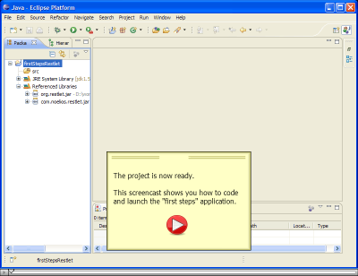

<#include "/header.ftl"/>
<#global title="Restlet 1.1 - Screencast" />
<#global content>
Restlet 1.1 - Screencast
Introduction
This screencast will take you through the installation of Restlet in an Eclipse
IDE and the creation of a simple Restlet application. The application developped
is fully described on this page.
Here are three parts of this screencast series:
Part 1 - Download and install the Restlet distribution (02:28)

Part 2 - Create a shell Restlet project in Eclipse (00:57)

Part 3 - Code the Restlet application and launch it (04:00)

<#include "/footer.ftl"/>